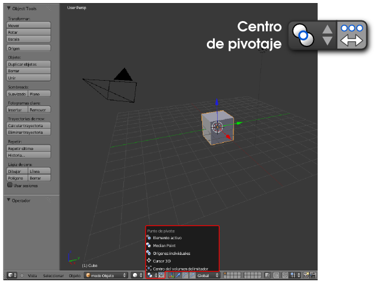
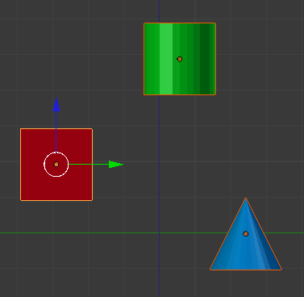
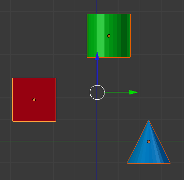
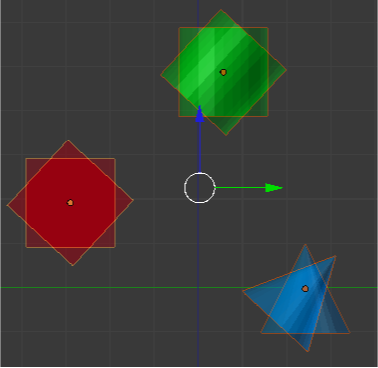
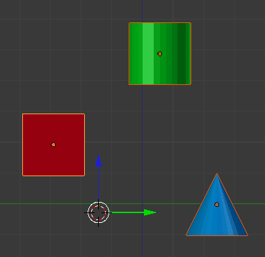
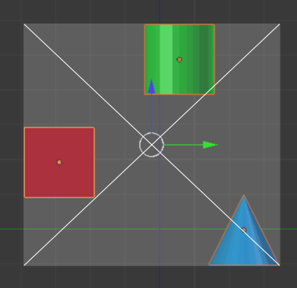

Centro de pivotaje
La transformación Rotar ("R") nos ha permitido cambiar la orientación del objeto pero quizá nos haya llamado la atención que no hemos escoger el centro de giro. Los objetos cuentan con un punto grueso de color naranja denominado Origen que permanece incluso si desactivamos el Manipulador 3D. Es precisamente ese punto el que hace las veces de centro de giro. Algo más adelante veremos cómo colocarlo en puntos estratégicos como un vértice de la malla.
El Manipulador 3D es el mejor método que tenemos para saber de antemano cuál será el centro de pivotaje porque es precisamente ahí donde se sitúa (casi siempre).
¿Qué más opciones relativas al centro de pivotaje tenemos? Todas ellas se escogen en un desplegable del editor Vista 3D allí donde aparece por defecto el icono de la siguiente imagen. Vamos a dar por hecho que hay objetos seleccionados (recordamos que se acumulan objetos seleccionados manteniendo pulsada la tecla "Shift" al hacer clic derecho).
- Elemento activo. En una selección múltiple siempre habrá un objeto que actúa como dominante y al que se denomina activo. Siempre se trata del último de los objetos en ser seleccionado y se caracteriza por un contorno naranja más brillante. Con esta opción activada se usa como centro de rotación el Origen de ese objeto activo.

- Punto medio. En una selección múltiple se establece una relación geométrica por la que se determina el centro de gravedad usando los datos de todos los centros. Es la opción por defecto y a la que recomendamos regresar siempre. Si se nos olvida cambiarlo podemos llegar a pensar que Blender no hace el giro coherentemente.

- Orígenes individuales. Al Manipulador 3D le resulta imposible encontrar una localización adecuada y se sitúa en el lugar propio de Punto medio. La razón es que en esta ocasión cada objeto rotará independientemente de los demás usando para ello su propio Origen.

- Cursor 3D. El centro de rotación se desplaza allá donde se encuentre el Cursor 3D.

- Centro del volumen delimitador. Si todos los objetos seleccionados se inscribieran en un prisma rectangular el centro de rotación sería la intersección de las dos diagonales principales de dicho prisma. En la imagen siguiente, al estar en vista ortográfica frontal, las diagonales coinciden con las del rectángulo delimitador.
